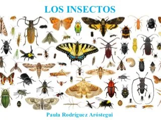

¿QUE SON LOS INSECTOS?
Los insectos son una clase de animales invertebrados del filo de los artrópodos, caracterizados por presentar un par de antenas, tres pares de patas y dos pares de alas. La ciencia que estudia los insectos se denomina entomología. Su nombre proviene del latín insectum, calco del griego ἔντομα, 'cortado en medio'.
